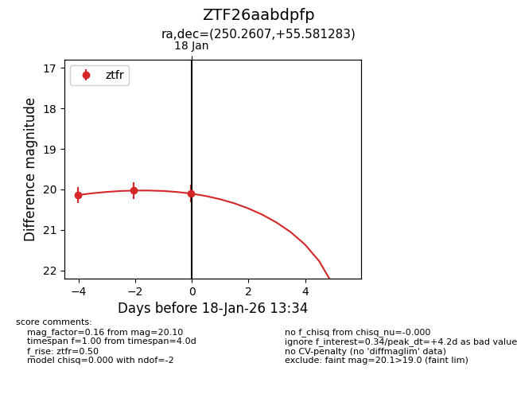
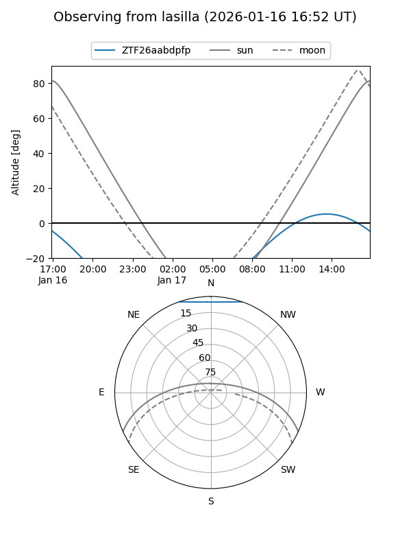
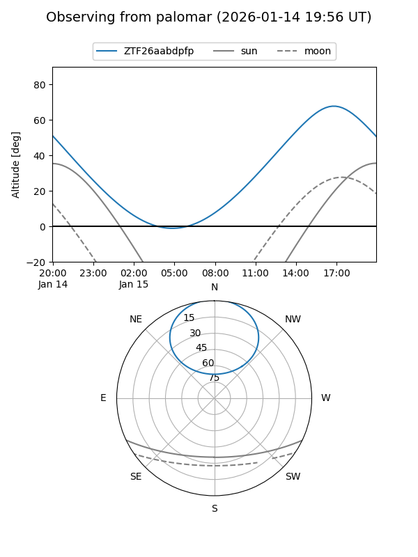
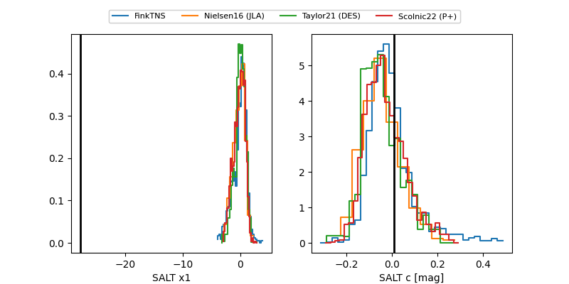

ZTF26aabdpfp
Target ZTF26aabdpfp at 2026-01-18 13:35
Aliases and brokers:
FINK: link
Lasair: link
ALeRCE: link
alt names
ZTF26aabdpfp (ztf,fink_ztf)
Coordinates:
equatorial (ra, dec) = 250.2607,+55.58128
equatorial (HMS+DMS) = 16:41:02.56,+55:34:52.62
galactic (l, b) = (84.2759,+40.32902)
Flags:
Photometry:
last ztfr=20.10
3 ztfr detections
Lightcurve

Visibility


Additional plots
